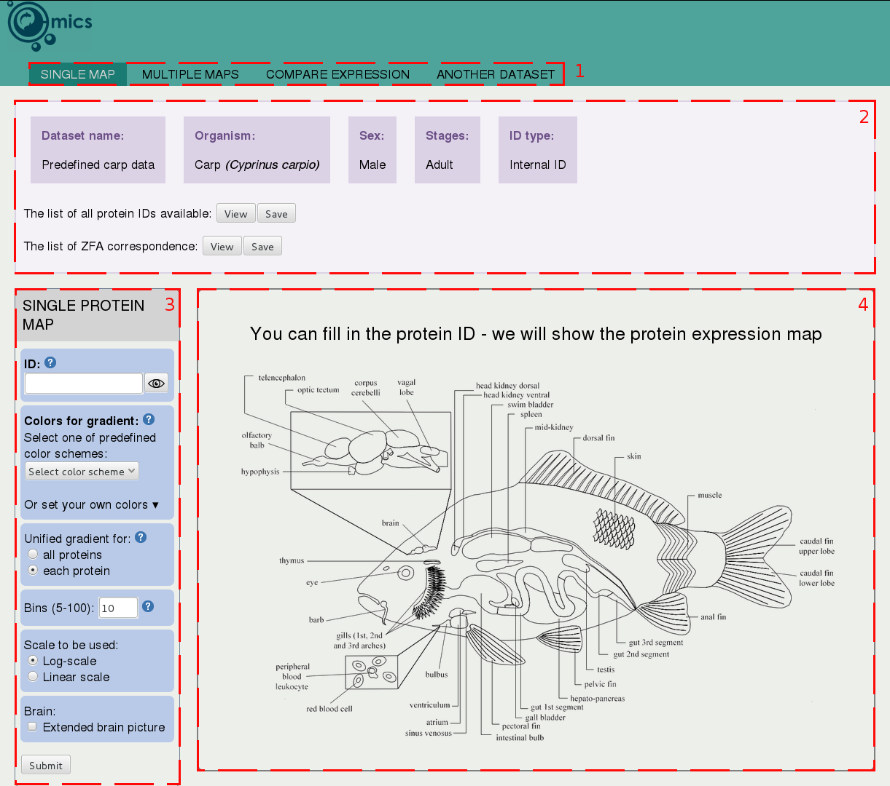

- How to upload my dataset
- How to use or delete already uploaded dataset
- Description of tool interface
- How to get an expression map for single ID
- How to get an expression map for a list of IDs
- How to get a map of expression difference between two IDs
How to upload my dataset
Click on the "UPLOAD A NEW DATASET" button on the main page. Below you will see a form for dataset uploading.
In the first field you can browse ".tsv", ".xls" or ".xlsx" file with your dataset. This dataset must be Tab-separated (for ".tsv"-file) and be in format like:
ID ID_1 ID_2 ID_3 ID_4 ID_5 ZFA_0005145 67 6 66 0 0 ZFA_0001076 890 77 34 1 90 ZFA_0000368 78 6 245 700 8 ZFA_0000403 56 7 0.2 890 0.4 ZFA_0000436 6 89 0 510 56
or:
ZFA_0000008 ZFA_0000107 ZFA_0000123 ZFA_0000403 ZFA_0000598 ID_1 400 11 12 0,2 0,5 ID_2 0,67 3 2 50 55 ID_3 43 56 523 0 0 ID_4 677 56 5 0,07 34 ID_5 123 567 580 1123 345
ZFA stands for ZebraFish Anatomy ontology CV-term. You can use ZFS (ZebraFish developmental Stage) as well. Ontology Lookup Service should help you to correspond particular tissue or developmantal stage name with ZFA or ZFS ID, respectively.
There is no unique carp (Cyprinus carpio) Anatomy and Developmental stages Ontology, therefore we use Zebrafish Anatomy ontology for carp as well, since these species have no dramatic differencies in anatomy.
Instead of browsing the file, if you check "paste your TSV-formatted data in a text-box", you will be able to paste your data in the same format into text-box, becoming visible under the checkbox. It might be usefull for small datasets.
The other fields describe attributes of uploading dataset and their functions are obvious.
As soon as you press "Submit" button, tool starts preprocessing your dataset. It may take from 15 sec to several minutes, depending on your dataset size. During this operation tool maps ZFAs and ZFSs of your dataset to such ones that tool can visualize.
Since preprocessing is done you will see a message, offering you to start your dataset visualization ("Yes") or to stay on the current page ("No") to upload another dataset or to use previously uploaded dataset.
How to use or delete already uploaded dataset
Click on the "USE DATASET" button on the main page. Below you will see fields to select dataset or to delete dataset.
To select dataset for visualisation simply select its name from select-box. You also may select predefined datasets from this select-box. Then press "Submit" button to proceed to the analysis.
To delete dataset from tool select its name from select-box and press "Submit" button. So far you won't be able to use this dataset anymore.
Description of tool interface
Tool interface consists of 4 main parts:
- Navigation. This part contains tabs to navigate between tool functions and the link to the Home-page, where you can change dataset.
- Dataset information. Here you can find current dataset properties, that were specified while dataset uploading and preprocessing. Here you can also view and save the list of all gene/protein IDs, presenting in current dataset, and the log of preprocessing with correspondence of ZFAs of current dataset to ZFAs that tool is able to visualize.
- Options. Using this options you can specify all available parameters of desirable picture. This part may contain the following fields:
- ID: here you should type ID of interest exactly as it is in uploaded table. Or click on "eye"-button (or on View-button of "The list of all gene/protein IDs" when you are using "Multiple maps"-tab) and select ID of interest from the list.
- Color scheme: here you should select the color scheme from select-box or define your own one using special fields that appear after click on black triangle (you can type hexadecimal color code in these fields or pick a color from color picker).
- Unified gradient for: here you may specify what normalization of axis you want. It is recommended to select "all proteins" if you want to visually compare several pictures and "each protein" in case if you want obtain one picture with best fit of values on axis.
- Bins: specify the number of colors that tool will divide the range of expression values into
- Scale: scale for expression valuse (linear or Log10)
- Brain: if checked, the tool will generate the largest picture of brain
- Developmental stages: includes or excludes pictures of developmental stages
- Results. Here will appear all pictures that tool generates. You are also able to save this pictures from this field in SVG or PDF format.
How to get an expression map for single ID
Select your dataset first. Click on "Single map" tab. To select ID of interest just simply type ID in the text-field or click on "eye"-button in "ID" field and choose needed ID from pop-up. Then specify options described in "Description of tool interface".
How to get an expression map for a list of IDs
Select your dataset first. Click on "Multiple maps" tab. Type a list of IDs in "List of IDs" field or click on "View" button of "The list of all protein IDs available" and check IDs from pop-up.
Note! Each ID in list of IDs field must be on its own line.
Then specify options described in "Description of tool interface".
How to get a map of expression difference between two IDs
Select your dataset first. Click on "Compare expression" tab. Select two IDs that you want to compare. To select ID of interest just simply type ID in the text-field or click on "eye"-button in "ID *" field and choose needed ID from pop-up. Then specify options described in "Description of tool interface".